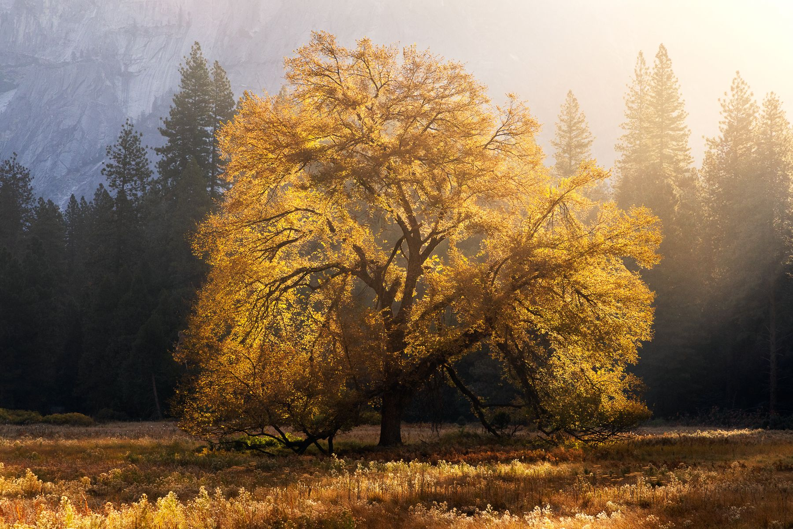

Composition is the overall layout of your photograph or where different elements are relative to one another. Creating an engaging and pleasing composition can be very difficult and this is something I’m always trying to improve on. Sometimes, if you simply take 5 steps to the left it can drastically change and transform the image you're capturing.
A good place to start is the classic rule of thirds. If you’re new to landscape photography or are having trouble deciding on a composition this is a great thing to fall back on. I often put the horizon in my scene on one of the horizontal lines and often put subjects of interest on one of the 4 intersections. The rule of thirds definitely works but I often try to stray away from this and mix it up once I’ve taken a couple shots.
Another thing I like to do in landscape photography is to add depth to my images. Instead of just showing a faraway mountain with the sky behind it and nothing else maybe try adding some foreground elements as well. You could show some rocks or plants on the ground, or you could frame your image with some tree branches. This is a great way to make your photo more immersive and engaging.
You can also utilize elements of the scene your capturing to create leading lines. This is a great way to direct or control how someone views your image. For instance your could have some roots or logs on the ground pointing towards a mountain in the background or you could have a shoreline pointing towards the subject of your image. Leading lines can be very powerful and effective tools in landscape photography.
Lenses
Unlike wildlife photography where everyone’s almost exclusively using using high focal length telephoto lenses, landscape photography is often much more about using wide angle lenses. Instead of capturing small or far away subjects, Landscape photography usually focuses on capturing large settings and environments. Of course you can capture some very compelling landscape shots with telephoto lenses (I do it all the time) but I usually like to start wide to capture the entire scene before me.
Want to capture the trees in the foreground, the lake behind them, the mountains in the distance, and the sky all in one photo? You’ll need a wide-angle lens for sure.
I use a 15-35mm lens most of the time and I love it. That being said, I sometimes find myself wanting to go tighter than 35mm. For this I have my trusted 24-105mm lens that I use quite often as well. If you go really wide, you may get some image distortion especially on the edges of your frame. I have an 8mm fisheye lens and this is an extreme example of how images can be significantly warped with wide-angle glass.
In addition to using the proper lens for your landscape shots you can also experiment with lens filters. Both polarized and neutral density filters are very popular in landscape photography. Polarized filters help reduce glare from light or water and neutral density filters allow you to achieve slower shutter speeds even if it’s bright out. There are also more exotic filters like graduated ND filters which gradually change darkness. These can be used if the sky is bright, and the land is dark during a sunset or sunrise.
Timing
Take your time! You may be excited to get to the next location on your shot list, or clouds might be moving in to mess up the lighting. Regardless of circumstances, slow down, get everything set up right and don’t rush yourself.

It's always a good idea to get to your desired location before you think you need to be there. If you anticipate great lighting or clouds in a specific location, get there before you think this will happen so that you have ample time to set up. Get your camera settings dialed in, make sure your camera is stable, make sure you have the right composition for the shot and then when you’re 100% ready start taking photos.